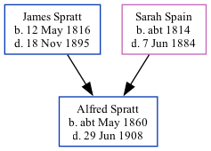

Alfred Spratt 1860 - 1908
[ Home ] | [ Calendar ] | [ Surnames Index ] | [ Family History ]The child of James Spratt and Sarah SpainAlfred Spratt, the great-great-uncle of Nigel Horne, was born in St Nicholas-at-Wade, Kent, England in Apr/may/jun 18601,2,3,4,5,6 and baptized there on Aug 5, 1860. Like his father, he was an agricultural laborer.
Alfred spent all of his life in Kent, England. Throughout his life, he lived in several places around the county: at The Row in St Nicholas-at-Wade on Apr 7, 18618; at Parish Cottage in St Nicholas-at-Wade on Apr 2, 18719; and at The Street in St Nicholas-at-Wade on Apr 7, 189111 (the same place as his father had been living on Apr 5, 1891) and on Mar 31, 190110.
He died on Jun 29, 1908 in Thanet, Kent, England6,7 and was buried in St Nicholas-at-Wade on Jul 3, 1908.
Parents
- James was born on May 12, 1816
- Sarah was born c. 1814
Citations
- 1861 England Census Online publication - Provo, UT, USA: The Generations Network, Inc., 2005.Original data - Census Returns of England and Wales, 1861. Kew, Surrey, England: The National Archives of the UK (TNA): Public Record Office (PRO), 1861. Data imaged from the National
- 1871 England Census Online publication - Provo, UT, USA: The Generations Network, Inc., 2004.Original data - Census Returns of England and Wales, 1871. Kew, Surrey, England: The National Archives of the UK (TNA): Public Record Office (PRO), 1871. Data imaged from the National
- 1891 England Census Online publication - Provo, UT, USA: The Generations Network, Inc., 2005.Original data - Census Returns of England and Wales, 1891. Kew, Surrey, England: The National Archives of the UK (TNA): Public Record Office (PRO), 1891. Data imaged from The National
- 1901 England Census Online publication - Provo, UT, USA: The Generations Network, Inc., 2005.Original data - Census Returns of England and Wales, 1901. Kew, Surrey, England: The National Archives of the UK (TNA): Public Record Office (PRO), 1901. Data imaged from the National
- England & Wales, FreeBMD Birth Index, 1837-1915 Online publication - Provo, UT, USA: The Generations Network, Inc., 2006.Original data - General Register Office. England and Wales Civil Registration Indexes. London, England: General Register Office. © Crown copyright. Published by permission of the Cont
- England & Wales, FreeBMD Death Index: 1837-1915 Online publication - Provo, UT, USA: The Generations Network, Inc., 2006.Original data - General Register Office. England and Wales Civil Registration Indexes. London, England: General Register Office. © Crown copyright. Published by permission of the Cont
- England & Wales, National Probate Calendar (Index of Wills and Administrations),1861-1941 Online publication - Provo, UT, USA: Ancestry.com Operations Inc, 2010.Original data - Principal Probate Registry. Calendar of the Grants of Probate and Letters of Administration made in the Probate Registries of the High Court of Justice in England. Londo
- 1861 England, Wales & Scotland Census - Findmypast (was age 0 and the son of the head of the household)
- 1871 England, Wales & Scotland Census - Findmypast (was age 10 and the son of the head of the household)
- 1901 England, Wales & Scotland Census - Findmypast (was age 41 and the head of the household)
- 1891 England, Wales & Scotland Census - Findmypast (was age 31 and the son of the head of the household)
Media
Alfred Spratt - probate
England & Wales births 1837-2006 - BMD/B/1860/2/AZ/001118/138
1901 England, Wales & Scotland Census - GBC/1901/0005517182
England & Wales deaths 1837-2007 - BMD/D/1908/3/AZ/000291/314
1891 England, Wales & Scotland Census Transcription - GBC-1891-0005854646
England Births & Baptisms 1538-1975 - R_884659752
Kent Baptisms - GBPRS/CANT/B/96801757
Family Tree
Generated by ged2site. Last updated on Nov 13, 2024